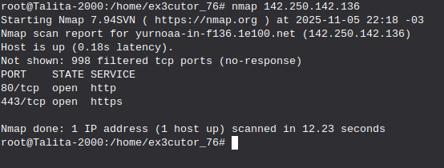
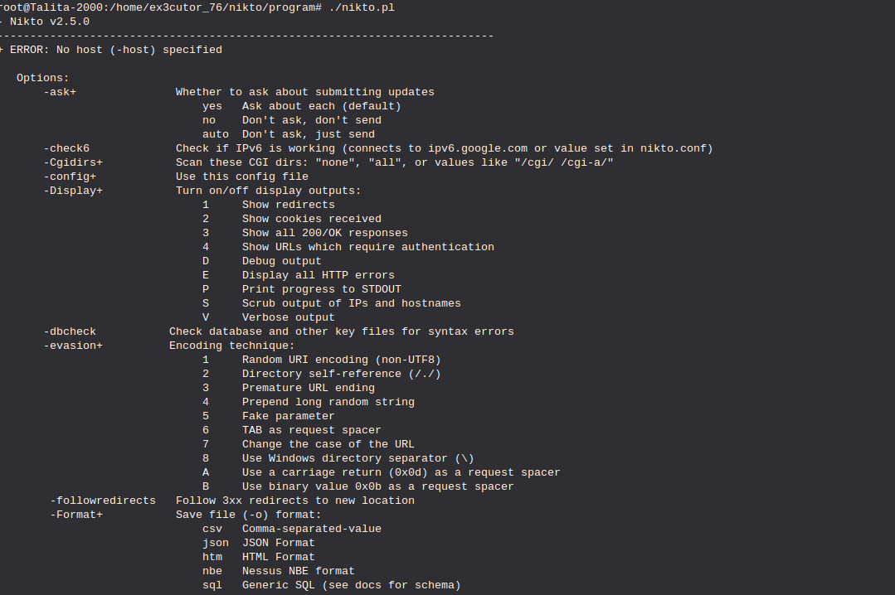
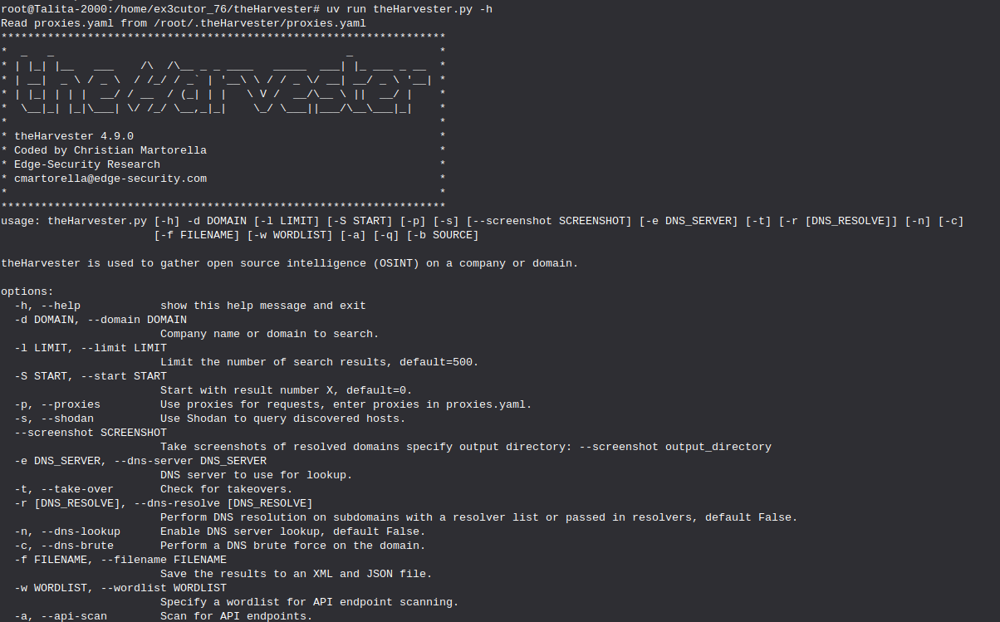
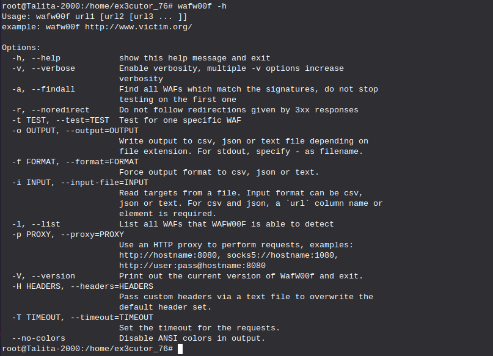
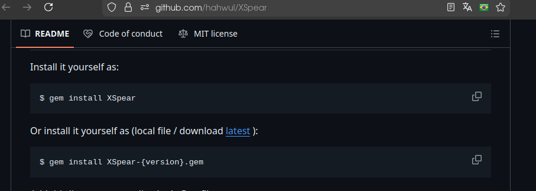
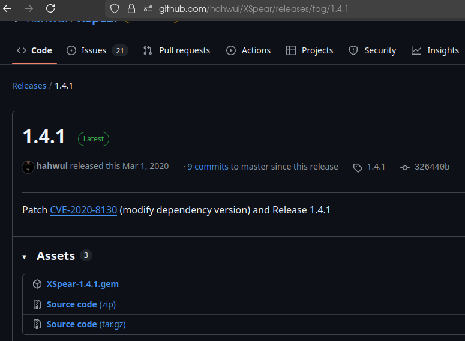
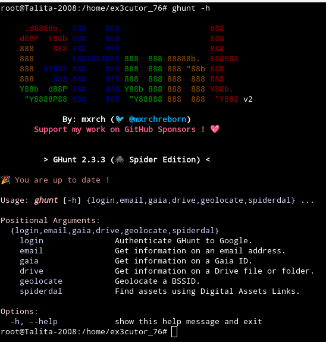
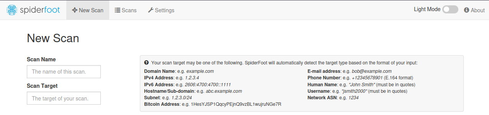

Técnicas OSINT:
Técnicas OSINT ou também chamada de Open source inteligence ou inteligência de código aberto é uma técnica de hacking
que você utiliza fontes públicas para buscar informações sobre um alvo e claro de forma legal, muitas profissões usam isso
como por exemplo investigação digital, advocacia e etc.
Sites OSINT:
O Osintframework é uma ferramenta que lista outras ferramentas osint de forma organizada.
O osint.rocks também é uma ferramenta que possui outras ferramentas dentro, a única diferença dela e do
osint framework é que o osint.rocks possui bem poucas ferramentas, mas ferramentas poderosas.
Como citada no tópico ## ela pode ser usada para saber se um site é malicioso, mas sabe qual o interessante?
Com essa ferramenta você também pode pegar informações sobre esse site como IP, domínio e outras informações.
O Shodan é uma ferramenta que pode te passar informações sobre um domínio coletando informações como IP, localização e até mesmo
portas TCP/IP.
Esse site muita gente conhece já que com esse site é possível rastrear ou descobrir informações sobre um número de telefone.
Com essa ferramenta você pode ver informações sobre um IP.
Com essa ferramenta você pode ver informações sobre um domínio pegando informações como IP, DNS e etc.
Com essa ferramenta você pode ver o perfil de usuário de alguém do instagram (Só pra avisar que ele não olha perfis privados, já que é de código aberto)
e sim ele garante anonimato.
O webmii é uma ferramenta poderosa pra se caso você quiser buscar informações sobre uma pessoa como processos e até mesmo o que essa pessoa fez, só pesquisando o nome
completo dela.
Quer verificar se um email é real? Use essa ferramenta, ela te passará informações importantes.
Com esta ferramenta você pode criar um link falso de outros sites para assim caso a pessoa clique no link falso, irá mostrar informações como
navegador, IP e até mesmo sistema operacional, além de outras informações interessantes.
Esse site na verdade é um curso Holandes de OSINT, mas nele possui uma variedade de ferramentas que podem ser utilizadas
para investigação digital.
O data breach serve para você pesquisar se um email, número de telefone ou nome foram violados.
A mesma coisa que o data breach, só que feito especificamente para emails.
Ele faz a mesma coisa que o data breach e o have i been pwned a única diferença é que
ele tem mais outras formas de pesquisar alguma violação como domínio, email, IP, URL e etc.
Extensões OSINT:
Sim existem extensões OSINT, que no caso até ajudam bastante e bem como eu conheço poucas Extensões OSINT, irei te passar algumas extensões que são até bem úteis.
Mas antes de continuar preciso te explicar o que são extensões: São pequenos programas no navegador que podem adicionar
funcionalidades extras no seu navegador (Um exemplo disso é a extensão ublock que bloqueia anúncios.)
Algumas extensões OSINT:
A extensão Vortimo Osint Tool é uma extensão que te permite fazer investigação web
e sim além de facilitar a investigação web, ele também te passa mais outras ferramentas
para facilitar sua investigação digital, ele é perfeito pra quem quer investigar alguém
tanto por imagem, nome, email ou IP.
Sim o Shodan tem uma extensão e você pode utilizar ela em seu navegador e relaxa ele tem a mesma função que
o Shodan tradicional que você conhece.
É uma extensão que permite você ver as tecnologias que tal site usa.
É uma extensão que permite você ver algumas informações como IP do site, localização e outras informações importantes.
Essa extensão serve para você sincronizar com o Ghunt do terminal, para você usar a ferramenta Ghunt.
Ferramentas Osint via terminal:
É aqui onde o Linux vai poder mostrar seu poder, porque nesta parte infelizmente o windows não irá conseguir
fazer essas coisas, e bem sim essas ferramentas hacking que eu mostrar só irei mostrar as que eu tenho conhecimento
sobre.
Ferramentas de hacking OSINT via terminal:

A primeira ferramenta é o nmap, ele é uma ferramenta bem simples de varredura e scan de
portas TCP/IP e UDP, e aqui nesta imagem por exemplo fiz um scan simples do IP do Youtube.
Como instalá-lo no terminal: abra o terminal e use esse comando: sudo apt install nmap
Se quiser saber se realmente está instalado use: nmap -h (Com esse comando te mostrará outros comandos que você pode usar com o nmap)

O sqlmap serve para testes de injeção SQL em alguns sites e até mesmo explora algumas falhas de injeção SQL
e assumir banco de dados e nesta imagem de exemplo apenas usei o -h para que ele me mostre outros comandos que posso
utilizar.
Como instalar o SQLmap:
Abra o terminal e use esse comando: git clone --depth 1 https://github.com/sqlmapproject/sqlmap.git sqlmap-dev
Use o comando "ls" para listar e se caso tiver um "sqlmap-dev" perfeito.
Para usar é só usar: cd sqlmap-dev
E agora para finalizar use: python3 sqlmap.py -h (Sempre recomendo usar "-h" para que mostre outros comandos
porque com "-h" você estaria pedindo ajuda para a ferramenta.)

O nikto é uma ferramenta perfeita para scaneamento de vulnerabilidades de servidores web, essa ferramenta
simplesmente busca falhas conhecidas, configurações inseguras e versões vulneráveis de alguns software's, nesta foto
por exemplo eu utilizei o -h para me mostrar os comandos que podem ser usados nessa ferramenta.
Como instalar o nikto:
Abra o terminal e utilize esse comando: git clone https://github.com/sullo/nikto
Após isso use: cd nikto/program
E para usar: ./nikto.pl -h (O -h irá te mostrar alguns comandos e se caso quiser usar esses comandos
substitua o "-h" por algum desses comandos.)

O theHarvester é uma ferramenta OSINT que você pode buscar informações sobre um domínio como
um email relacionado, host's, IP's e até mesmo algumas pessoas relacionadas, na imagem acima por exemplo
eu utilizei o -h para me mostrar alguns comandos.
Como instalar o theHarvester:
Instale o uv no terminal: curl -LsSf https://astral.sh/uv/install.sh | sh
Clone o repositório: git clone https://github.com/laramies/theHarvester
Entre no repositório: cd theHarvester
instale as dependências: uv sync
Agora para usá-lo e ver alguns comandos: uv run theHarvester -h
Aviso: Sempre que você quiser pegar informações sobre um domínio use o -b all (Com essa opção
o theHarvester vai puxar informações sobre aquele domínio em todos os navegadores e fontes abertas)

O IP-tracer é uma ferramenta para rastrear um IP e passar algumas informações, nessa imagem por exemplo
utilizei o IP-tracer para rastrear o IP do youtube, e bem claro mais um aviso: Não existe uma ferramenta que rastrea a localização exata
de um dispositivo ou IP, então saiba que esse longitude e latitude é apenas o mais próximo onde o provedor do IP está localizado.
Como instalar o IP-tracer:
Abra o terminal e use esse comando: apt update (Esse comando faz uma lista de atualização dos seus softwares instalados via apt além de
listar atualizações do sistema.)
Se caso você não tem o Git (Que no caso é impossível porque ele já vem instalado nas distros Linux) use: apt install git -y
Bem se caso você já tem ou já instalou use: git clone https://github.com/rajkumardusad/IP-Tracer.git
Entre no repositório: cd IP-Tracer
Após isso dê a permissão a esse software de ser usado no terminal ou como aplicativo com: chmod +x install
Agora para saber se realmente instalou use: sh install.
Se caso não funcionar ou se caso o seu foi igual o meu que foi bem diferente use: trace -m (Com esse comando ele mostra informações sobre seu IP)
Comando útil: trace -t (IP do alvo)
Com este comando você pode ver informações de um IP.

O WPProbe é um scanner de plugins do wordpress que muitas vezes esses plugins são desatualizados e claro contém algumas vulnerabilidades
e bem com esse WPProbe é perfeito para captar essas vulnerabilidades e nesta imagem de exemplo usei -h (Como sempre) para mostrar alguns comandos.
Como instalar o WPProbe:
Entre no terminal e use: git clone https://github.com/Chocapikk/wpprobe
Entre no repositório: cd wpprobe
Após isso use: go mod tidy
Construa o binário com esse comando: go build -o wpprobe
Comandos para você usar que são úteis:
Scan básico: ./wpprobe scan -u (URL do site)
Scan com força bruta (Literalmente olha o site inteiro): ./wpprobe scan -u (URL do site) --mode bruteforce
Scan com modo hibrído (um equilibrio de furtividade e minuciosidade): ./wpprobe scan -u (URL do site) --mode hybrid

O Namechk é uma ferramenta que te permite buscar o nome de usuário, aqui na imagem por exemplo apenas utilizei ./namechk e ele
me mostrou algumas opções de comandos para usar.
Como instalar o Namechk:
Abra o terminal e clone o repositório git: git clone https://github.com/TheRipperJhon/namechk.git
Abra o repositório: cd namechk
Agora altere a permissão da ferramenta usando: chmod +x namechk.sh
Agora se você quiser usar use: ./namechk.sh -h (Com esse comando ele mostra os comandos que você pode usar.)

A ferramenta sherlock também é uma ótima ferramenta para buscar um nome de usuário, nesta imagem por exemplo
busquei o nome de um usuário com o nome de "Daniel" e isso me deu 278 resultados.
Como instalar o sherlock:
Abra o terminal e use: sudo apt install sherlock
Se caso quiser confirmar que o sherlock está instalado use: apt search sherlock
Como usar: sherlock (Nome de usuário)
E pronto ele irá mostrar uma lista de sites onde esse username foi encontrado.

A ferramenta wafw00f é uma ferramenta que detecta se um site está protegido por algum WAF (Web application
Firewall) e qaundo possível identifica qual fornecedor/serviço de WAF (Um exemplo é o Cloudflare ou o Azure da microsoft) e
nessa imagem de exemplo usei o -h para me mostrar o comandos que posso utilizar.
Como instalar:
Abra o terminal e use: python3 -m pip install wafw00f --break-system-packages
E para usar a ferramenta use: wafw00f (URL do site)
E pronto com esse comando você faz um scan básico. (Se quiser se aprofundar use "-h" que mostrará comandos)
Bem, nessas ferramentas eu não mostrei de forma em prática porque eu prefiro deixar vocês praticarem, para sentirem a experiência
de estar em um terminal utilizando comandos como esses, e sim só deixei ferramentas que tenho conhecimento e que sei utilizar.

O XSpear é uma ferramenta para testes de XSS, na imagem acima por exemplo utilizei "-h" como sempre
para me mostrar alguns comandos que posso usar na ferramenta.
Como instalar o XSpear:
Primeiro abra o terminal e use o comando: gem install XSpear
Após isso use o comando: gem install XSpear-{version}.gem (Esse "version" seria meio que uma versão do XSpear, abaixo estará um exemplo de como ver a versão para a instalação.)

E após isso clicar no texto em azul escrito como "latest"

Após isso irá aparecer esta tela que logo irá mostrar algumas versões e você terá que baixar o arquivo: XSpear-1.4.1.gem
Agora adicionar essa linha no seu Gemfile: gem 'XSpear'
E bem pode aparecer um erro mas relaxa, agora só baixar algumas dependências:
para baixar as dependências use: gem install colorize
gem install selenium-webdriver
gem install terminal-table
gem install progress_bar
E para usar use: bundle
Se caso o seu for igual o meu que também deu errado mas consegui instlar normalmente use: XSpear -h
E assim é a instalação do XSpear que sim admito ter sido bem complicado pra mim e se foi confuso pra você sinto muito e posso tentar melhorar.

O ghunt é uma ferramenta que pode te ajudar a pegar algumas informações sobre um email, claro que são poucas informações, entretanto,
será útil.
Como instalar o Ghunt:
Primeiro abra o terminal e digite esse comando: pip3 install pipx
Depois use esse comando: pipx ensurepath
Após isso use: pipx install ghunt
Agora para usar, use: ghunt login e use a extensão do ghunt para sincronizar (Recomendo usar o base64)
Agora se quiser saber mais comandos use: ghunt -h
Aviso: Sim é preciso do login para a ferramenta funcionar.

O spiderfoot é uma ferramenta que se integra a praticamente todas as fontes de dados disponíveis e utiliza uma variedade
de métodos para análise de dados, tornando esses dados fáceis de navegar.
Como instalar o Spiderfoot:
Abra o terminal e clone o repositório usando o comando: git clone https://github.com/smicallef/spiderfoot.git
Entre no repositório: cd spiderfoot
Após isso baixe os requisitos usando: pip3 install -r requirements.txt --break-system-packages
Crie um servidor para começar as investigações: python3 ./sf.py -l 127.0.0.1:5001

E por aqui você clica em "New scan"
 E agora no "Scan name" é só colocar o nome do scan
para se organizar melhor e no "Scan target" o email, IP domínio, hostname e etc do alvo.
Dorking:
Dorking seria um tipo de forma de busca que você pode utilizar em qualquer navegador, e sim os navegadores também
possuem comandos e a maioria chama isso de "Google Dorking" e abaixo estará alguns exemplos de buscas Dorking.
site:github.com = Neste comando por exemplo eu acabei de fazer uma busca do próprio github e agora só aparece
páginas relacionadas ao site github.
Intext: "Juliana" = Após eu usar uma pesquisa assim eu estaria pesquisando o nome de uma pessoa e que após eu utilizar
este comando dorking tanto no google ou qualquer outro navegador irá aparecer páginas relacionadas a esse nome.
Intext: "Microsoft" instagram.com = Aqui é a mesma coisa do intext, a única diferença é que eu especifiquei o site que eu quero
que o navegador procure e que após eu pesquisar assim vai mostrar páginas relacionadas ao instagram da microsoft.
drive.google.com chaves = Com este comando dorking eu estaria procurando alguma pasta pública do google drive
que aqui por exemplo se eu pesquiso algo assim eu estaria procurando alguma pasta do google drive com algo relacionado
ao Chaves.
pdf: O principe = Com este comando eu estaria procurando algum arquivo pdf do livro "O principe" de Nicolau Maquiável.
Bem existem muitos comandos pra isso e isso é bem complicado, mas por sorte existe uma IA capaz de fazer isso e muitos hackers usam.
E ela se chama Dork GPT que além de ser fácil de usar ela já monta o comando pra você que você copia
e cola no navegador, assim facilitando sua pesquisa dorking.
IA and Hacking:
Pois é, com avanço de tecnologia as IA's também começaram a participar do hacking, tanto do lado ruim
quanto do lado bom e que sim, você pode utilizar uma IA para o hacking mas claro a maioria utilizando scripts
por conta que as IA's possuem uma certa limitação do que deve ser dito ao usuário e que muitas vezes isso atrapalha.
Mas aqui irei fazer diferente, irei te passar IA's que realmente te dizem o que você quiser e que também não tem tanta
limitação e bem na verdade é só uma IA mesmo, até porque a maioria das IA's que faziam isso ou foram alteradas ou derrubadas.
O skynetchat é uma IA que pelo incrível que pareça te diz tudo, mas claro com direito apenas a 5 perguntas,
mas o lado bom é que você pode criar conta repetidas vezes para recuperar as 5 perguntas, já que ele não pede um email ou login
e uma coisa boa sobre essa IA é que simplesmente ela não é nem antiética e nem ética por si só, então se caso você perguntar
literalmente qualquer coisa, ela irá te responder como se fosse normal.
Bem isso foi tudo que tive que ensinar, claro que tem muitas coisas, mas acredite em mim, com o tempo o site pode ser
atualizado contendo novas informações e até novas técnicas.